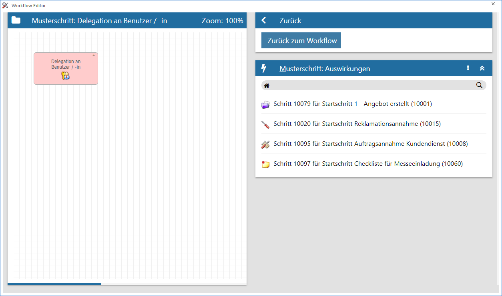
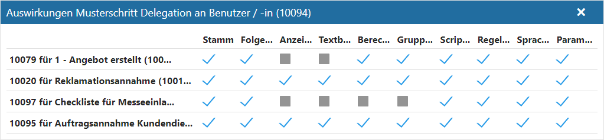
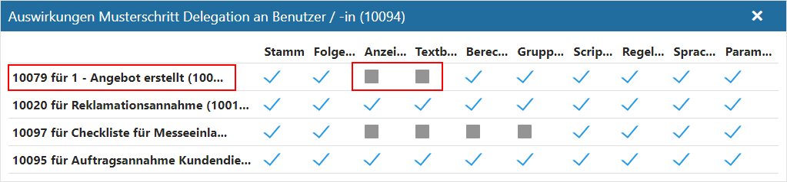
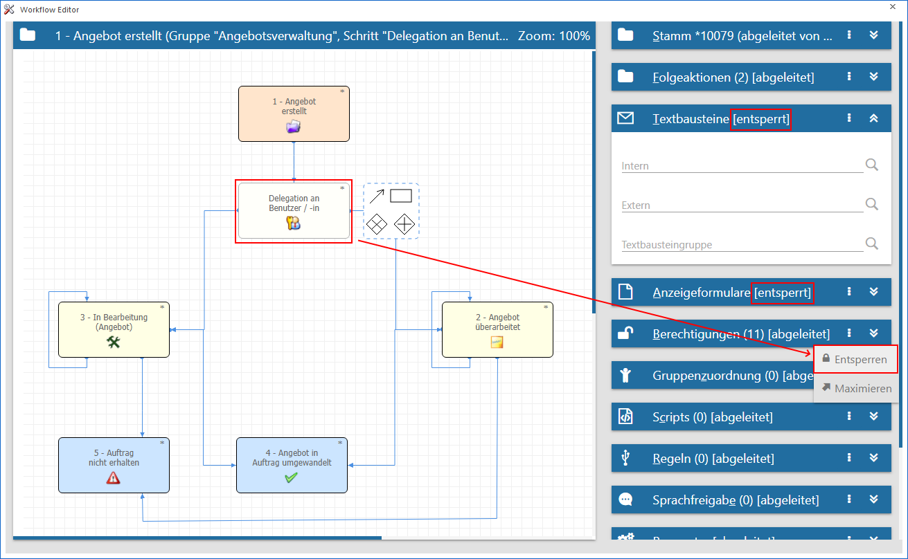

Definitionsbereich - Musterschritt: Auswirkungen
Handelt es sich um einen Musterschritt, so sind über diesen Bereich die abgeleiteten Schritte ersichtlich, d.h. jene Schritte, welche auf dem Musterschritt basieren und mit diesem verknüpft sind. Die Art der Verknüpfung über das Fenster " Auswirkungen Musterschritt" kontrolliert werden.
Hinweis
Bei jenen Schritten, die von einem Musterschritt abgeleitet sind, gelten grundsätzlich dieselben Einstellungen wie jene aus dem Musterschritt. Wird jedoch bei einem der abgeleiteten Schritte diese Einstellung übersteuert, indem eine der Einstellungen "entsperrt" wird, so wird dieses im Fenster "Auswirkungen Musterschritt" angezeigt.
Beispiel
Als Musterschritt ist der Schritt "Delegation an Benutzer / -in" vorhanden. Wird dieser ausgewählt, so werden im Bereich "Musterschritt: Auswirkungen" jene Schritte angezeigt, die von diesem Musterschritt abgeleitet sind.

Ø Kopfzeile
In der Kopfzeile des Bereichs wird die Bezeichnung "Musterschritt: Auswirkungen" angezeigt.
Ø  Menü
Menü
Durch Anwahl des Menüs werden, abhängig vom aktuell gewählten Workflow-Objekt, weitere Funktionen zur Verfügung gestellt:
ü Maximieren / Minimieren
Bei
einem Maximieren wird die Sprachfreigabe als einziger Bereich in der Definition
angezeigt, bzw. bei einem Minimieren wieder alle Bereiche in der Definition.
Hinweis
Über die Tastenkombination ALT + H kann der Bereich direkt maximiert bzw. minimiert werden.
Ø Tabelle
In der Tabelle werden all jene Schritte aufgeführt, welche auf dem aktuellen Musterschritt basieren und mit diesem aktiv verknüpft sind (d.h. abgeleitet wurden). Bei Anwahl eines Schritts öffnet sich das Fenster " Auswirkungen Musterschritt".
Auswirkungen Musterschritt

Durch Anwahl eines Schritts aus dem Bereich "Musterschritt: Auswirkungen:" wird das Fenster "Auswirkungen Musterschritt" geöffnet. In diesem werden die abgeleiteten Schritte angezeigt, wobei Abweichungen zum musterschritt mit einem grauen Kästchen dargestellt werden, bestehende "Verknüpfungen" mit einem blauen Häkchen.
Beispiel

Der Schritt "10079" des Workflows "1 - Angebot erstellt" wurde vom Musterschritt "Delegation an Benutzer / -in" abgeleitet. Da die Textbausteine und die Anzeigeformulare in diesem Workflow individuell eingestellt werden sollen, wurde die Verknüpfung zum Musterschritt für diese Bereiche aufgehoben. Alle anderen Einstellungen stammen weiterhin vom Musterschritt.
Sollen nun auch die Berechtigungen individualisiert werde, so kann dieses über das Menü des Bereich "Berechtigungen" (Funktion "Entsperren") getätigt werden.
